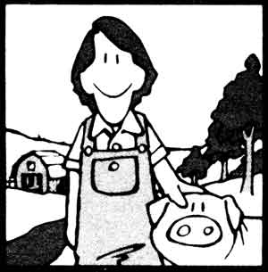
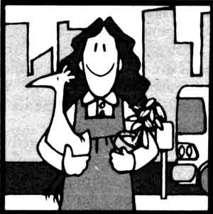
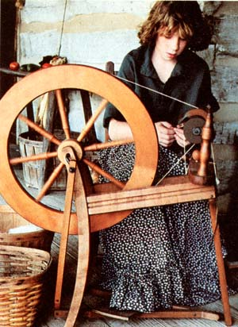
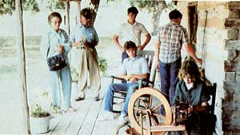
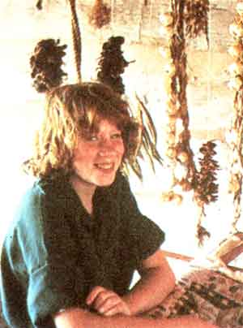
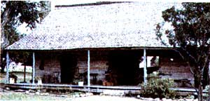

Would you like to to do something really different next summer, get to wear an old-timey costume, and help out the National Park Service, to boot? Then you might consider becoming...
On many summer mornings, my sister Anita rises early . . . dresses in black high-button shoes, a long skirt, a muslin shirt, and an apron . . . and leaves for a cabin. There she spends her day doing many of the chores that were necessary for survival in the late 1800's. She waters and tends the garden, harvests and prepares vegetables, cleans the henhouse and gathers eggs, feeds the chickens, sweeps the cabin, and hauls water for washing dishes and clothes. Most important of all, though, she talks with visitors.
Why is Anita doing all this? Well, she's working at the Johnson Settlement in the Lyndon B. Johnson National Historic Park. There she and several other people re-create the frontier lifestyle of Sam Ealy Johnson, Sr. (the grandfather of our 36th President) and his family.
And the most unusual part of Anita's job is that she doesn't get paid a cent. You see, she has the distinction of being a "volunteer in the park", working for the National Park Service. To do so, she has to dress in a costume appropriate to the period portrayed at the settlement. Not only that, she must try to bring those pioneer days to life in such a way that park visitors feel linked with the past and understand what it was like to live back in the late nineteenth century.
Anita re-creates the past through her work and through conversation with park visitors. To sharpen her knowledge of the past events she interprets, she read a book about the history of the Johnson family when they were living at this Texas Hill Country settlement.
HOW TO BECOME A VIP
In order to be one of the Volunteers in Parks (VIP), you must have a personality well suited for the job. You have to like being around other people, be concerned about your environment, and enjoy sharing your skills with visitors and with your co-workers. Before Anita applied for the job, she considered these requirements and decided that she would enjoy this type of work. (She also likes the outdoors and working with animals.)
There's no age limit for Park Service volunteers-my sister is twelve years old-but you do have to be in good health and physically able to carry out your duties. (The superintendent of the park for which you want to volunteer may ask you to obtain a medical examination, at government expense, to make sure you're fit.)
Once you decide you'd like to try to become a volunteer, the next step is to send the proper form to the park employee in charge of your nearby VIP program. This application is available at all national park areas. [EDITOR'S NOTE: You can also write one of the regional Park Service offices listed in the accompanying sidebar for more information on VIP programs in your area.] On that form, you'll indicate any interests or skills you might want to use or develop. You'll also list the days and hours you can work. (Volunteers can pretty much
choose their own schedules. My sister, for instance, usually works two days a week from 9:00 AM to 5:00 PM.) And if you're under 18, you'll also have to include a signed permission note from your parents.
The last thing Anita had to do before becoming a VIP at Lyndon B. Johnson National Historic Park was to take a oneweek training course, in which she went through sessions to help her learn the techniques of demonstration. She even had to read a book on the subject. She also received some first aid training, including classes in CPR (cardiopulmonary resuscitation) and instruction on how to use the fire extinguishers in the park, so she'd know what to do in emergency situations.
Finally, Anita was ready to begin her service as a volunteer. She and the other trainees were taken on a tour of the Texas White House. This was a real treat because, for security reasons, few people are ever allowed inside. Afterward, they all had a picnic lunch on the lawn. While they were eating, visitors in the tour buses waved while driving by, which really increased my sister's excitement about her new job.
SETTLEMENT LIFE
Anita's days at the settlement are busy. The biggest task at her cabin is turning wool into yarn. She starts by taking a ball of raw wool sheared from a sheep and teasing it - by pulling little pieces out to help get rid of any dust, burrs, or other particles. She then takes those pieces and works a few of them at a time between wool cards, which are flat brushes used for combing the fibers into neat strips of wool called rolags.
Once that's done, the spinning begins. Anita twists and stretches an end of one rolag into thread by hand and then strings that onto her spinning wheel. She presses the machine's foot pedal up and down in order to turn the large wheel that draws and twists the rest of the wool into yarn.
Once the yarn is coiled loosely on a reel, it is called a skein.. Sometimes Anita runs two skeins of yarn backward through the spinning wheel to make double-thick two-ply yarn.
My sister often dyes the drawn-out wool. She may use beets, barks, flowers, roots, grasses, leaves, vegetables, or other natural dye materials to color the yarn. First, she cuts a chosen substance into little pieces that she heats in a pan of water. She soaks the yarn in the pan with the dye for one or two days and then lays the colored strands out to drain and dry.
When all these things are done, Anita and her co-workers usually crochet the yarn, since the settlers of the time period being portrayed didn't weave at home.
Another interesting job Anita has is washing clothes by the old method. With a bucket she draws water out of the settlement's well and pours it into a wooden washtub. A dry tub always leaks, though, so she has to let it swell by keeping it filled with water for two or three days before any washing can be done.
When everything is ready, Anita stands a rough washboard on the tub's edge and begins to scrub the garments with lye soap. Anita has to rub the soap in carefully or she'll skin her nuckles against the washboard. Finally, she lays the clean clothes over tree branches to dry and dumps out the wash water.
Life at the settlement demands a lot of hard work from Anita and her co-workers. (It isn't as easy as it may look to the visitors.) However, Anita says that when she gets hot and tired, she can sit in the dogtrot (a breezeway connecting two parts of the cabin) and let the wind do some "volunteer work" of its own . . . by cooling her off.
My sister enjoys her job a lot. The park staff members are always patient and understanding while they train and assist the children who are VIP's. Anita has the privilege of meeting people of many nationalities, and since learning how to do some of the things mothers and daughters did in the late nineteenth century, she has a better understanding of the lifestyle of the past.
All in all, Anita says she'll never forget the experience of being a hardworking volunteer.
As a summer volunteer for the Park Service, Anita Tiff acts out the life of a pioneer girl in the late 1800's. Spinning wool, making quilts, and explaining frontier life to park visitors are just a few of her chores ..
|
 |
 |
 |
|
 |
 |
 |
|
|
|
|